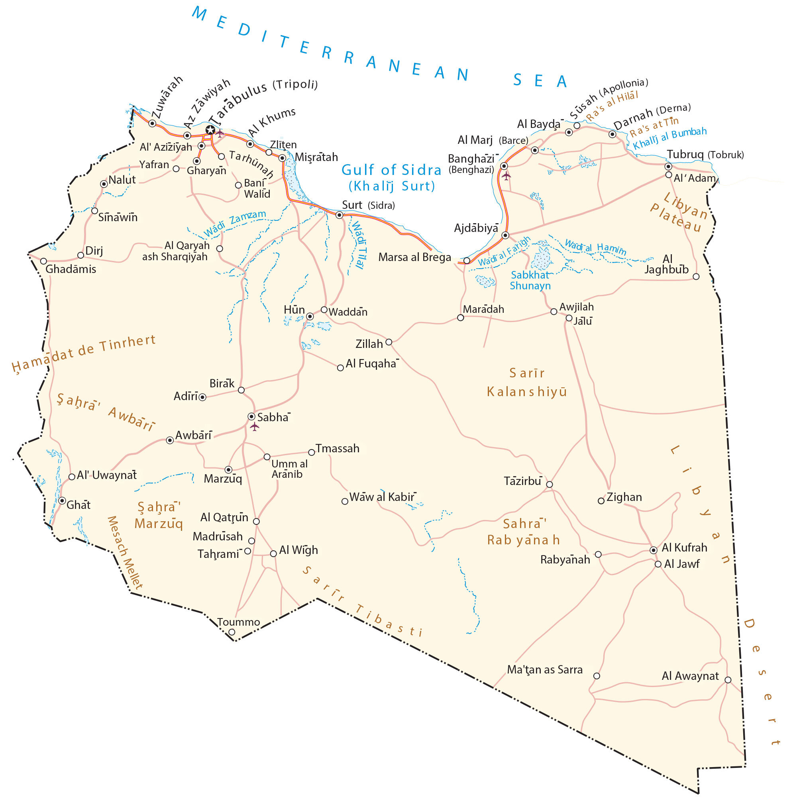

Libya is a large African country in Northern Africa. It borders Egypt to the east, Sudan to the southeast, Chad to the south, Niger to the southwest, Algeria to the west, and Tunisia to the northwest. Most of Libya’s population is concentrated along its 1,770-kilometer long coastline with the Mediterranean Sea, including its capital of Tripoli.
A total of 6.78 million people reside in Libya with closer to half living in Tripoli and its surrounding area. Libya is known for its oil reserves, deserts, and ancient history.
Go back home